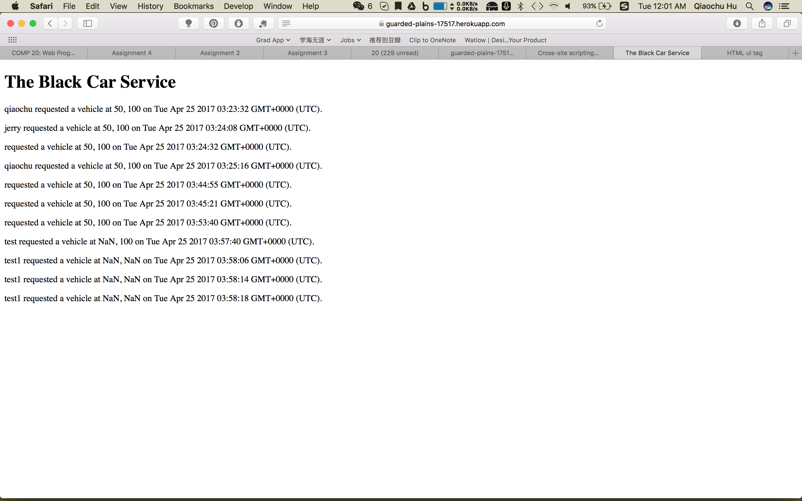

Introduction
I was hired to find as many security and privacy problems as I can for the heroku app "guarded-plains-17517" built by Tomo Iwasaki. The app "guarded-plains-17517" was a car calling service similar to Uber.
Methodology
I used postman to post testing data to the app.
Abstract of Findings
The app has multiple XSS vulnerabilities. The most obvious one is listed below with more detail. The app also has a design malfunction: when vehicle is posted, the app returns the vehicle list instead of passenger list as it should. It also appears that the app takes in and stores bad data such as invalid latitude and longitude, and sometimes undefined id.
Issues found
XSS at Passenger Side
-
Issue: There is a cross-site scripting vulnerablity.
-
Location: https://guarded-plains-17517.herokuapp.com/
-
Severity: High. XSS can be quite annoying to users and make the website look super unprofessional.
-
Description: I sent <script type='text/javascript'>alert('xss');</script> as the username to the server using postman. And then we I got to on my browser, an alert window popped up.
-
Proof:
-
Resolution: Set a variable for each of the POST request body parameters. Then use variable.replace(/[^\w\s]/gi, '') to remove all special characters.
bad data
-
Issue: The app takes in invalid data and stores them.
-
Location: The problem occurred in POST /submit but displays in GET /.
-
Severity: Medium. This problem does not break the program, but it could cause the app not to function well when data is extracted from the app and used by the front end.
-
Description: I found this problem by posting javascript username to the database and then go to the main page in the browser.
-
Proof: 
-
Resolution: First check if the data being posted to the server is in the right format (string for username and double for lat and lng) before storing them as documents in the collection.
wrong list
-
Issue: The app returns the passenger list instead of vehicle list when a document is posted to the passenger collection. The app also returns the vehicle list instead of passenger list and mislabel it as the passenger list when a document is posted to the vehicle collection. It seems that the app also fails to only extract data from the last 5 minutes. The app also does not remove repetitive users from the list.
-
Location: POST /submit
-
Severity: Medium. It gives out the wrong information, which can be really bad if the front end was not carefully adjusted to it.
-
Description: I found it using postman to post data to the server. I observed the response.
-
Proof:
-
Resolution: Overhaul the code so that it does the right thing.
Conclusion
"guarded-plains-17517" does have the basic set up to be a server. However, it requires more caution on security, and quite a few changes needed to be made for the server to operated properly.
References
I referred to the Wikipedia page for cross-site scripting.